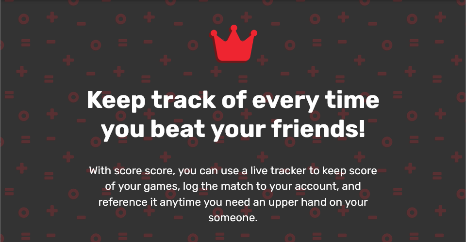
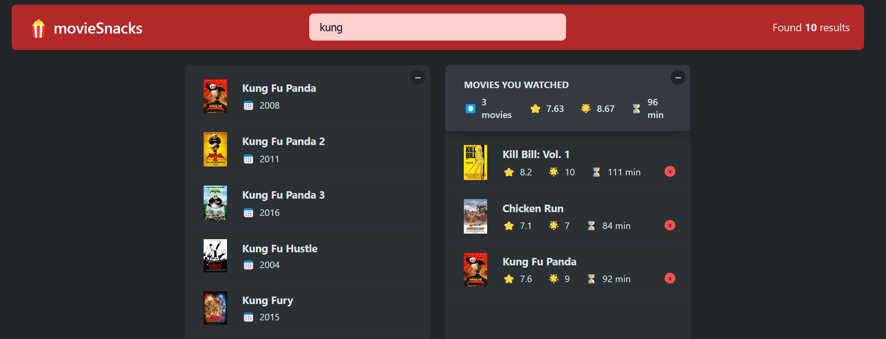
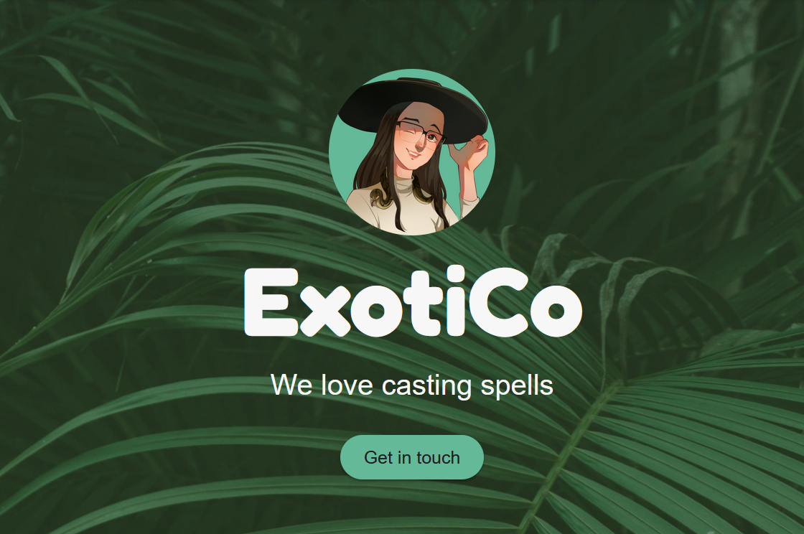
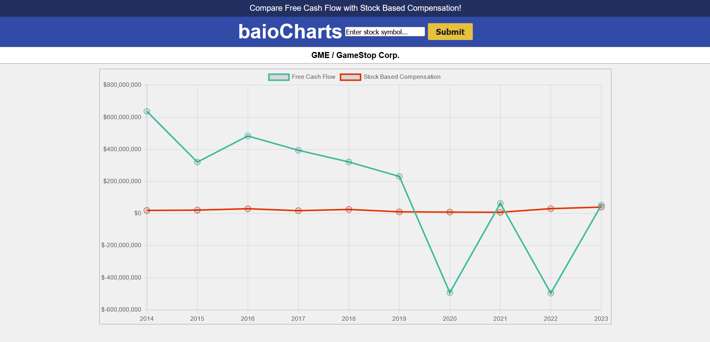
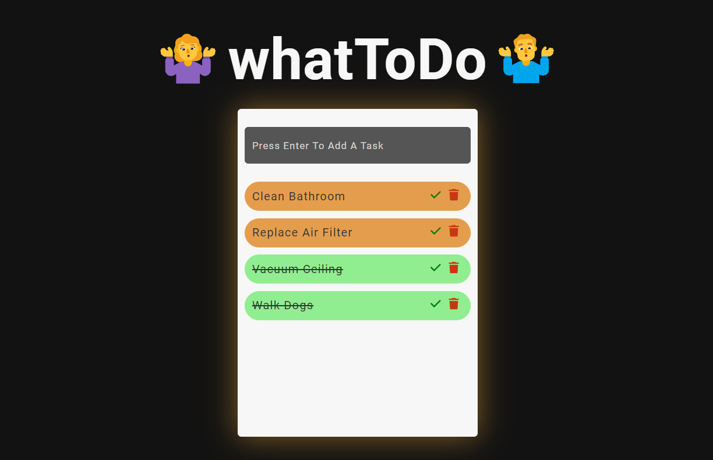

This was my summer internship project with Code and Trust. We spent a couple of weeks planning the project using Monday boards before entering development. The app uses React.tsx among many useful libraries such as ReactQuery, MUI, React-Hook-Form, and uses mySQL/Prisma for the backend. This experience has taught me what it’s like to work with a team of developers, and how to overcome many challenges and tight deadlines.
1. Score-Score

2. Binches

Binches is a chat app that uses firebase as a database, and react on the frontend. Users can create/join a private room where others can join and chat.
3. movieSnacks

movieSnacks is a react app that fetches movie data from the omd api and renders a list of movies you can select, rate, and add to your watch list.
4. ExotiCo

ExotiCo is a web page that I'm working on for a local reptile education company. They bring reptiles to birthday parties and schools to teach kids about them! I used React, MUI, React-Hook-Form, and a couple other small libraries for this landing page. The project is currently still in progress.
5. baioCharts

My very first personal project. It is a simple javascript/html/css application that fetches stock data from a 3rd party api, and uses a library (chart.js) to display the data.
6. whatToDo

This is a small jQuery checklist application I created to help me learn some jQuery fundamentals.